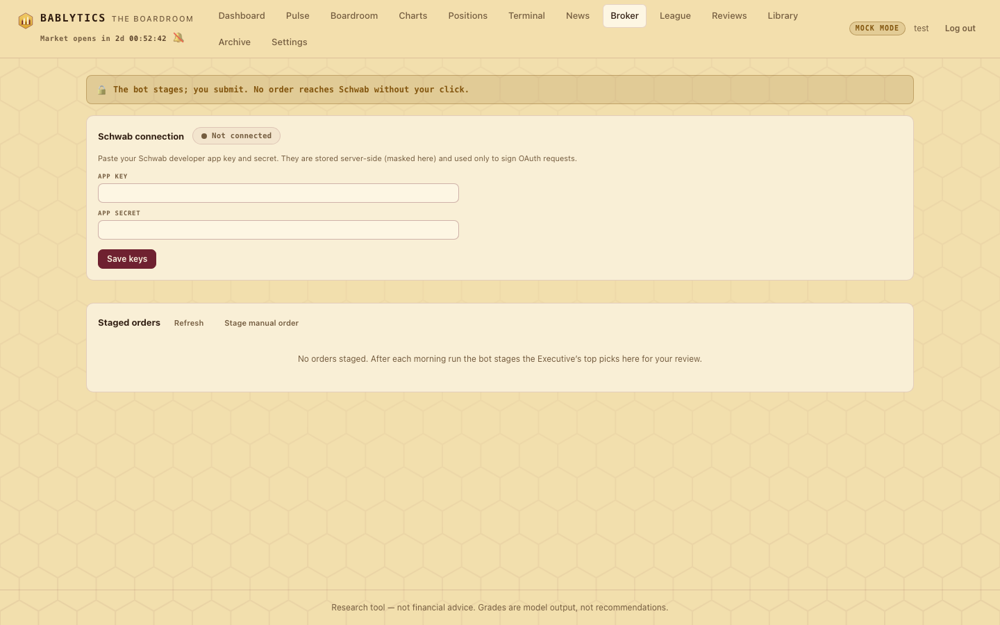

Desk · staged, never sent
The Broker Page
Connect a Schwab developer app with the paste-the-redirect OAuth flow, read balances and positions, and review the orders the bot stages after each morning run — which only you can submit, one at a time, each behind a confirmation. There is no auto-submit anywhere.
orders.submit_order, runs only when POST /api/orders/{id}/submit is called for the one id in the path.The Broker page (#/broker) has three cards: the Schwab connection, an account summary once you are connected, and the staged orders queue. It is the only place in Bablytics that can talk to a brokerage, and it is optional — every other feature, including the queue, works with no broker configured at all.

Before you start: a Schwab developer app#
Bablytics does not ship with broker credentials. You create an app in Schwab's developer portal yourself and bring back its app key and app secret. The callback URL registered with that app must match the one Bablytics uses — by default https://127.0.0.1:8421/schwab/callback. Nothing listens there; that is deliberate (see the flow below). Because the schwab-py library needs Python 3.10, the client is a thin httpx wrapper in bablytics/broker/schwab_client.py that does the OAuth dance itself.
Keys can be entered on this page (stored in the database settings table as schwab_app_key / schwab_app_secret, masked on display, used only to sign OAuth requests) or supplied as environment variables SCHWAB_APP_KEY, SCHWAB_APP_SECRET and SCHWAB_CALLBACK_URL; the database values win when both exist.
Connecting#
- Paste the app key and secret into the connection card and press Save keys. The chip changes to Keys saved · sign-in needed.
- Press Open Schwab sign-in ↗. The app asks the server for Schwab's authorize URL and opens it in a new tab. Sign in at Schwab and approve the app.
- Schwab redirects your browser to the callback URL — which will not load. That is expected: there is no local HTTPS listener. Copy the full URL from the address bar (it carries
?code=…). - Paste it into the field under step 2 and press Complete connection. The server extracts the code, exchanges it for tokens, and the chip turns Connected with the access token's expiry shown beside it.
Tokens are written to schwab_tokens.json in the data directory with mode 0600. The access token is refreshed automatically when it is within five minutes of expiry; the refresh token dies seven days after issuance, after which the status shows needs re-auth and you repeat steps 2–4. Change keys returns you to step 1. No credential is ever shown back to you in full.
Read-only sync#
Once connected, the account card shows your balances and positions from GET /api/broker/account, cached in-process for 60 seconds. Until the broker is configured that route answers 409 Connect Schwab in Settings and the card stays empty. Reading the account does nothing to it.
The staged-order queue#
What the bot stages#
After each completed morning run the pipeline calls orders.stage_orders_from_run once, inside a try/except, and that function only ever writes rows with status staged. It takes the Executive's top five leads by final grade, keeping only grades of 60 or more, and writes one ticket each:
- Stocks become limit orders sized by house rules — dollars =
broker_sizing_equity × order_size_pct / 100(defaults $25,000 and 5%, so $1,250), shares = floor(dollars ÷ briefing price), at least 1 — with the limit nudged 0.2% in the direction that helps a fill (buys 0.2% above the briefing price, short sales 0.2% below). A long lead stagesbuy; a short lead stagessell_short. - Options become a single contract,
buy(to open), limit at the contract's last price. - A lead with no usable briefing price (a synthetic scan, for instance) stages a reviewable one-share market order rather than being dropped silently.
- Each ticket carries a one-line rationale — the first sentence of the Executive's summary, or the thesis.
Staging is idempotent per run (if bot rows already exist for that run nothing is added), one bad lead never blocks the rest, and it happens whether or not a broker is configured — the queue is always reviewable. The dashboard shows "🧾 N orders staged — review in Broker" while anything is waiting.
Manual tickets#
Stage manual order opens a small form for a hand-entered ticket: ticker, side (buy, sell, sell_short, buy_to_cover), quantity, stock or option, limit or market, the limit price, and a contract for options. The server validates the ticket and builds the Schwab order JSON immediately, so a malformed ticket fails at stage time with a 400, not at submit time. The form's own caption says it: staging only — it joins the queue for your review, never auto-submitted.
Editing and removing#
While a ticket is still staged you can edit its quantity and limit price in the row, or remove it (Remove order: it flips to cancelled locally — "it was never sent to Schwab"). A ticket that has been submitted can be cancelled at Schwab (Cancel at Schwab), which needs an authenticated connection and then marks it cancelled locally.
Submitting an order#
Step by step, this is what happens when you press Submit on a staged row (web/workspace.js → routes_broker.py → orders.py):
- Submit is disabled until the broker is connected. The row says "Connect Schwab above to enable Submit."
- A confirmation dialog opens: "Submit this order to Schwab? This sends a real order to your brokerage. Review the details:" — then the order (side and ticker), quantity and instrument, type and limit price — and "You are submitting this single order. Nothing else is sent." The button reads Submit order.
- If you edited the quantity or limit in the row, the edit is saved first with
PATCH /api/orders/{id}, so what is sent equals what the dialog just restated. - The client calls
POST /api/orders/{id}/submitwith no body: the server sends the stored ticket. - Server side,
submit_order(order_id)requires the order to still bestaged; requires a configured and authenticated broker (otherwise409with "Connect Schwab in Settings" or "Schwab authorization expired — reconnect in Settings"); builds the order JSON (aSINGLEstrategy,NORMALsession,DAYduration, one leg,LIMITorMARKET); and callsschwab_client.place_orderexactly once. - The row becomes submitted with Schwab's order id, or error with the detail Schwab returned. Either way it is recorded.
No route touches more than the single order named in its path. Nothing in the Pulse, the Bailiff or the Paper League imports a broker module, writes to staged_orders, or constructs an order — that is checked, not assumed.
Sizing settings#
broker_sizing_equity- Dollars the bot sizes stock tickets against. Default 25,000.
order_size_pct- Percent of that equity per ticket. Default 5 (0 < pct ≤ 100).
schwab_callback_url·schwab_account_hash- Override the callback, and pin which account hash to trade in when Schwab returns several (otherwise the first).
These live in the database settings table and are read at staging / submit time. They can be changed through POST /api/broker/settings; the Broker page's connection card currently exposes only the app key and secret, so the sizing values are API- or database-edited — see Settings.
Order statuses#
staged waiting for you · submitted sent to Schwab, with its order id · cancelled removed before submit, or cancelled at Schwab · rejected / error the venue refused it, with the detail kept on the row.